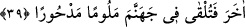

Bahru’l-ulûm’da böyle geçmektedir. “Rabbinin nezdinde sevimsizdir.” Burada
kasdedilen, razı olunan/beğenilenin zıddı olan istenmeyen nefret edilen şeydir. Yoksa
burada, irâde edilenin mukabili kasdedilmemiştir. Çünkü bütün hâdiselerin Allah’ın
irâdesiyle gerçekleştiğine kesin delil bulunmaktadır. Böylelikle Mu‘tezile’nin ‘Çirkin
şeylere irâde taalluk etmez.’ şeklindeki görüşleri için bu âyete sarılmaları geçersiz
olmaktadır. Aksi halde irâde etmek ve istememek gibi iki zıt bir araya gelmiş olur.
Zikredilenlerden bir kısmı büyük günah olmasına rağmen onlar “sevimsiz/mekruh”
olarak vasfedilmiştir. Bu, bir şeyin Allah Teâlâ katında sadece mekruh/sevimsiz
olmasının, o şeyden uzak durmak için yeterli olduğunu bildirmek içindir. Bu yüzden
takvâ ehline göre mekruh, sakınmanın gerekliliği bakımından haram gibidir. Mekrûhu
bilip tanımayan kimse bir adım sonra ibâhiyye (her şeyi mübah gören kimseler)
dâiresine geçer. Bunu iyi düşün, muhâfaza et ve edeblen.
39. İşte bunlar, Rabbinin sana vahyettiği hikmetlerdir. Allah ile birlikte başka ilah
edinme; sonra kınanmış ve (Allah’ın rahmetinden) uzaklaştırılmış olarak
cehenneme atılırsın.
“İşte bunlar,” daha önce geçip açıklanan mükellefiyetler “Rabbinin sana vahyettiği
hikmetlerdir.” Allah’ın sana vahyettiği hususlardan bir kısmıdır veya vahiy
cinsindendir. Hikmetlerden maksad, şeriat ilimleri ve bizzat hakkı bilmektir. Bu nazarî
hikmetin gayesi ve esasıdır. En hayırlısı ise o hikmetle amel etmektir. Bu da nesih veya
bozulmanın olmadığı muhkem hükümlerden olan ilmî hikmettir.
“Allah ile birlikte başka ilah edinme” Bu hitap Hz. Peygambere’dir, fakat asıl
kasdedilenler yasağı işlemesi mümkün olan kimselerdir. Bu ifâdenin tekrarlanması ise
işin başının ve sonunun tevhid olduğunu vurgulamak içindir. Çünkü niyeti olmayan
kimsenin ameli bâtıl olur. Kim de fiili veya terkiyle tevhid dışında bir şeyi kasdederse
çabası boşa gider. Tevhid her hikmetin başıdır ve özüdür. Tevhidi olmayanın ilmi ve
hikmeti fayda vermez. Bunları en değerli filozoflar söylese, ünü semânın derinliklerine
çıksa bile bu böyledir. Sayfalar dolusu hikmetler filozoflara fayda vermez. Çünkü onlar
Allah’ın dini konusunda hayvanlardan daha sapıktırlar.
Şirk koşmanın dünyadaki karşılığı “Sonra kınanmış ve kendi başına terk edilmiş
olarak kalırsın.” (22. âyet) buyrularak ifâde edilmişti. Bu âyette ise şirkin âhiretteki
cezâsı şöyle belirtilmiştir: “sonra kınanmış,” Allah’ın rahmetinden ve her hayırdan
“uzaklaştırılmış olarak cehenneme atılırsın.” Sen âhirette kendini kınarsın, diğer
insanlar ve melekler de seni zemmeder ve kınarlar.
Bu bir temsîldir. Çünkü Allah Teâlâ tahkir etmek için şirk koşan kimseyi ele alınıp